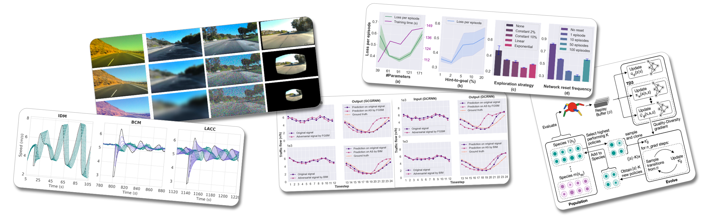
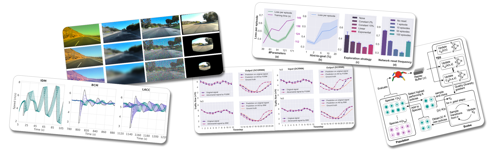

My research lies at the intersection of reinforcement learning, autonomous systems, and intelligent transportation. Below are my publications in peer-reviewed conferences and journals.

My research lies at the intersection of reinforcement learning, autonomous systems, and intelligent transportation. Below are my publications in peer-reviewed conferences and journals.
IROS 2025 (In Submission)

UbiComp 2025

CHASE 2025